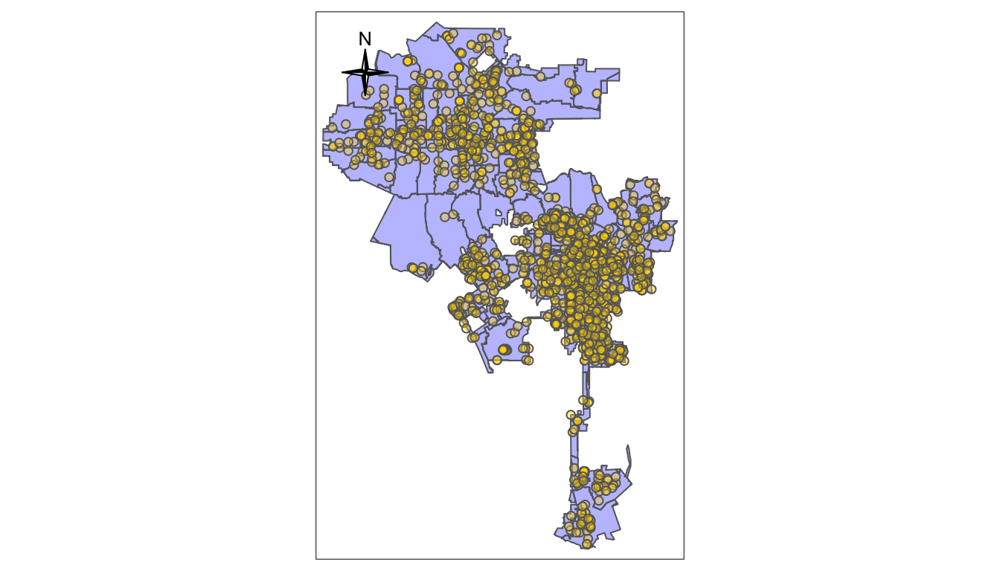
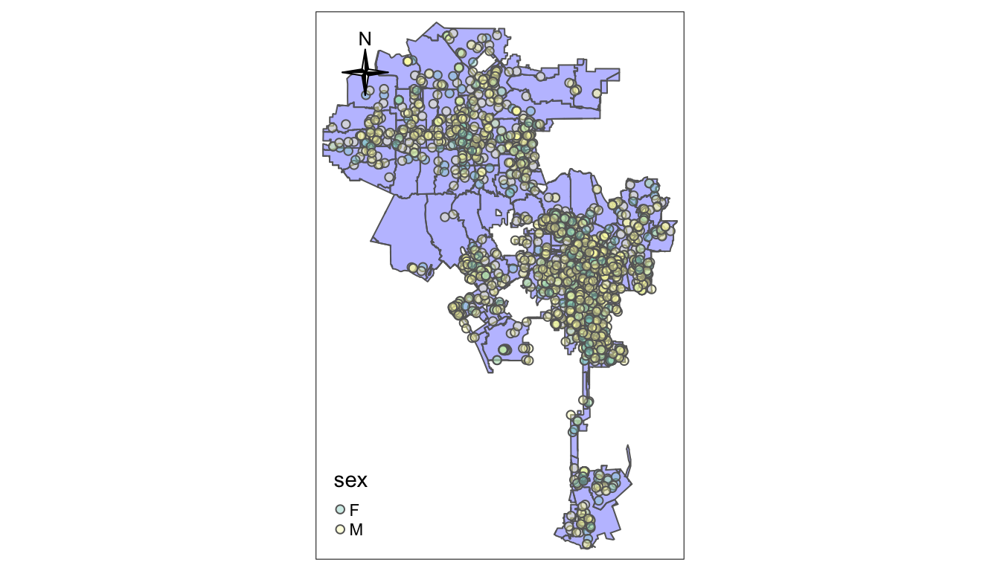
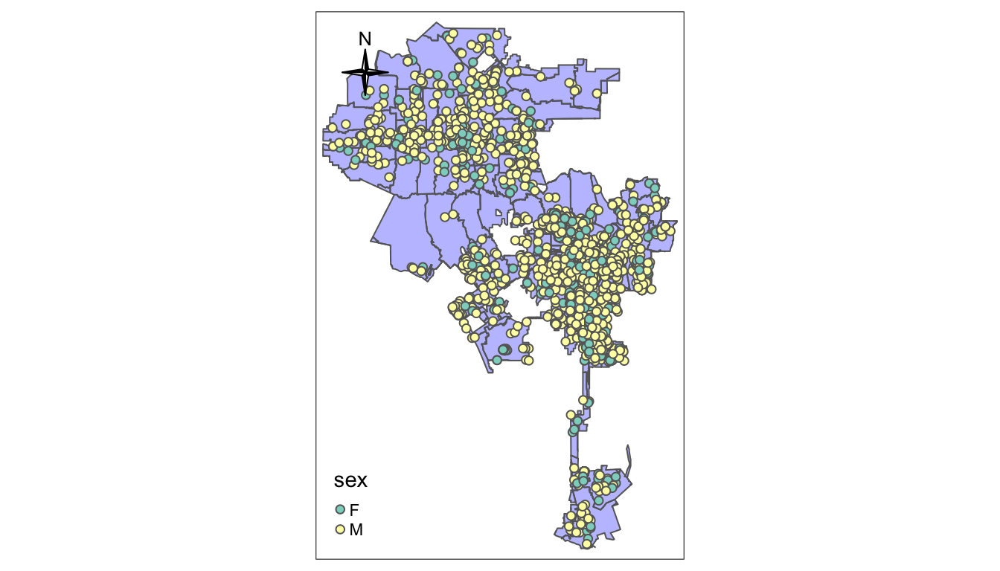
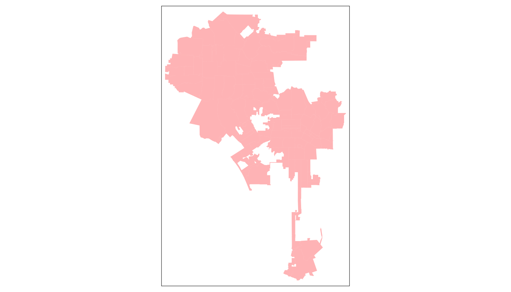
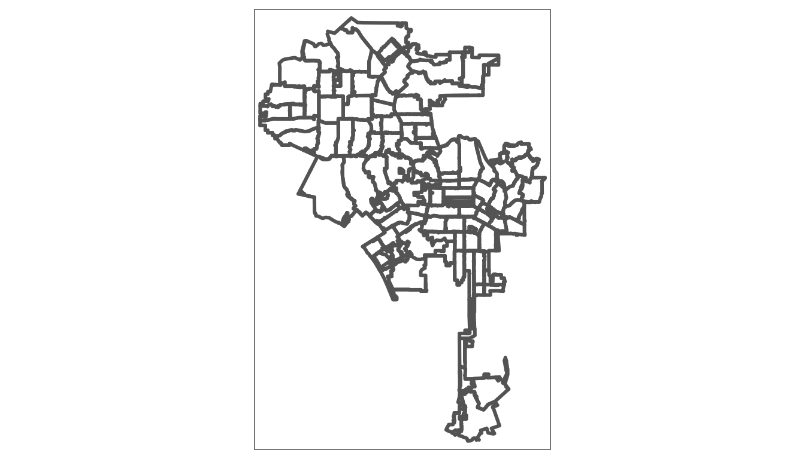
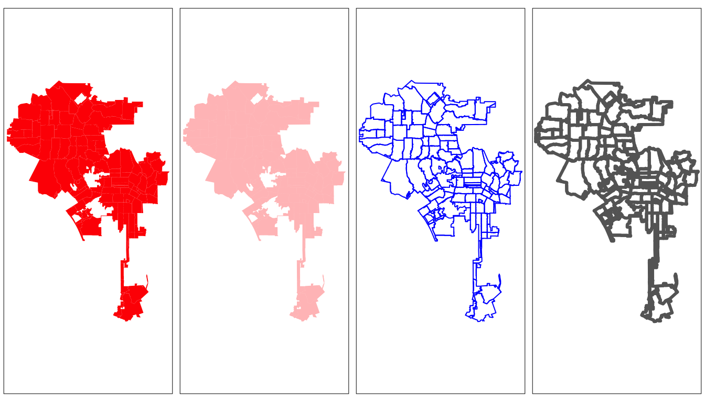
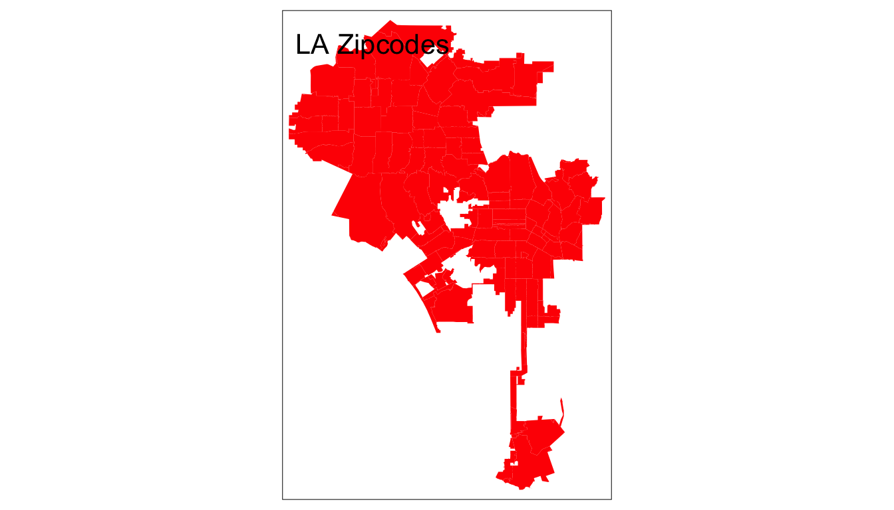
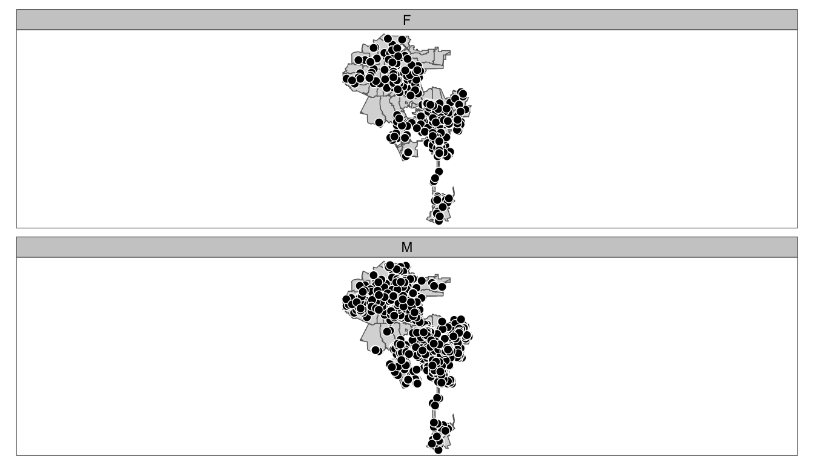
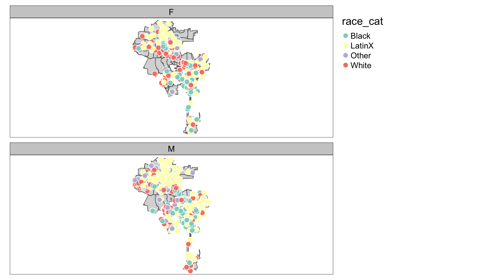

AFAM 188: R 5 Mapping with R Continued
arrests <- read_csv('data/aug6_12_arrest_data.csv')
arrests_sf <- st_as_sf(arrests, coords = c("longitude", "latitude"), crs = 4326)
#geometry type: MULTILINESTRING
la_county <- st_read(dsn ="data/DRP_COUNTY_BOUNDARY/DRP_COUNTY_BOUNDARY.shp")## Reading layer `DRP_COUNTY_BOUNDARY' from data source `/Users/timdennis/instruction/afam188/afam188-r/data/DRP_COUNTY_BOUNDARY/DRP_COUNTY_BOUNDARY.shp' using driver `ESRI Shapefile'
## Simple feature collection with 2 features and 2 fields
## geometry type: MULTILINESTRING
## dimension: XY
## bbox: xmin: 6280000 ymin: 1380000 xmax: 6670000 ymax: 2120000
## epsg (SRID): 2229
## proj4string: +proj=lcc +lat_1=35.46666666666667 +lat_2=34.03333333333333 +lat_0=33.5 +lon_0=-118 +x_0=2000000.0001016 +y_0=500000.0001016001 +ellps=GRS80 +towgs84=0,0,0,0,0,0,0 +units=us-ft +no_defs## Reading layer `CAMS_ZIPCODE_STREET_SPECIFIC' from data source `/Users/timdennis/instruction/afam188/afam188-r/data/CAMS_ZIPCODE_STREET_SPECIFIC/CAMS_ZIPCODE_STREET_SPECIFIC.shp' using driver `ESRI Shapefile'
## Simple feature collection with 358 features and 10 fields
## geometry type: POLYGON
## dimension: XY
## bbox: xmin: 6280000 ymin: 1380000 xmax: 6670000 ymax: 2120000
## epsg (SRID): 2229
## proj4string: +proj=lcc +lat_1=35.46666666666667 +lat_2=34.03333333333333 +lat_0=33.5 +lon_0=-118 +x_0=2000000.0001016 +y_0=500000.0001016001 +ellps=GRS80 +towgs84=0,0,0,0,0,0,0 +units=us-ft +no_defs#geometry type: MULTIPOLYGON
la_zips <- st_read(dsn = "data/Los_Angeles_City_Zip_Codes/Los_Angeles_City_Zip_Codes.shp")## Reading layer `Los_Angeles_City_Zip_Codes' from data source `/Users/timdennis/instruction/afam188/afam188-r/data/Los_Angeles_City_Zip_Codes/Los_Angeles_City_Zip_Codes.shp' using driver `ESRI Shapefile'
## Simple feature collection with 157 features and 7 fields
## geometry type: MULTIPOLYGON
## dimension: XY
## bbox: xmin: -119 ymin: 33.7 xmax: -118 ymax: 34.3
## epsg (SRID): 4326
## proj4string: +proj=longlat +datum=WGS84 +no_defs#geometry type: MULTILINESTRING
la_freeways <- st_read(dsn ="data/CAMS_FREEWAY_SHIELDS/CAMS_FREEWAY_SHIELDS.shp")## Reading layer `CAMS_FREEWAY_SHIELDS' from data source `/Users/timdennis/instruction/afam188/afam188-r/data/CAMS_FREEWAY_SHIELDS/CAMS_FREEWAY_SHIELDS.shp' using driver `ESRI Shapefile'
## Simple feature collection with 45 features and 4 fields
## geometry type: MULTILINESTRING
## dimension: XY
## bbox: xmin: 6280000 ymin: 1720000 xmax: 6670000 ymax: 2120000
## epsg (SRID): 2229
## proj4string: +proj=lcc +lat_1=35.46666666666667 +lat_2=34.03333333333333 +lat_0=33.5 +lon_0=-118 +x_0=2000000.0001016 +y_0=500000.0001016001 +ellps=GRS80 +towgs84=0,0,0,0,0,0,0 +units=us-ft +no_defs5.1 Revisit last week
Last week we finished with this map.
## tmap mode set to plotting tm_shape(la_zips) +
tm_polygons(col="blue", alpha = 0.3) +
tm_shape(arrests_sf) +
tm_bubbles(size = 0.09, col="gold", alpha=0.4)+
tm_compass(type = "4star", position = c("left", "top"), size = 2) 
tm_shape(la_zips) +
tm_polygons(col="blue", alpha = 0.3) +
tm_shape(arrests_sf) +
tm_bubbles(size = 0.09, col="sex", alpha=0.4)+
tm_compass(type = "4star", position = c("left", "top"), size = 2) 
Let’s affect the color of the dots by setting a palette argument.
#using a palette
tm_shape(la_zips) +
tm_polygons(col="blue", alpha = 0.3) +
tm_shape(arrests_sf) +
tm_bubbles(size = 0.09, col="sex", palette = "Set3")+
tm_compass(type = "4star", position = c("left", "top"), size = 2) 
We can find the available palettes via this code:
Try out a few palettes.
We can also add a style argument.
tm_shape(la_zips) +
tm_polygons(col="blue", alpha = 0.3) +
tm_shape(arrests_sf) +
tm_bubbles(size = 0.09, col="sex", style = "cat")+
tm_compass(type = "4star", position = c("left", "top"), size = 1) 
5.2 Saving map objects
We can also save a tmap as an object in R and reuse it or build on it. For instance:
If we run this we get an error that no layer is define - we haven’t told tmap how to display our la_zips data.
BUT we can now build off of lazips and then use different versions of the map.

We can use this idea and save our work after each change. Let’s create multiple objects with different colors and other parameters.
lzip1 <- lazips + tm_fill(col = "red")
lzip2 <- lazips + tm_fill(col = "red", alpha = 0.3)
lzip3 <- lazips + tm_borders(col = "blue")
lzip4 <- lazips + tm_borders(lwd = 3)



Even more interesting we can compose these maps into a grid by using tmap_arrange function:

The most commonly used aesthetics for fill and border layers include color, transparency, line width and line type, set with col, alpha, lwd, and lty arguments, respectively.
tmap is very flexible and granular. We can control all aspects of the map and as we move along we can show more


5.3 Faceted Maps (small multiples)
One way to present different data on a map is to split the data by a category and create two maps with different data. Let’s look at this example.
tm_shape(la_zips) +
tm_polygons() +
tm_shape(arrests_sf) +
tm_symbols(col = "black", border.col = "white", size = 0.5) +
tm_facets(by = "sex", nrow=2, free.coords = FALSE)
Let’s color by multiple variables in our data:
tm_shape(la_zips) +
tm_polygons() +
tm_shape(arrests_sf) +
tm_symbols(col = "race_cat", border.col = "white", size = 0.5) +
tm_facets(by = "sex", nrow=2, free.coords = FALSE)
5.4 Interactive Maps
So far, we’ve been using tmap to produce a static map, but tmap lets us create interactive maps by switching it’s mode to view instead of the default plot. We can do this using a single line.
## tmap mode set to interactive viewingtm <- tm_shape(la_zips) +
tm_polygons() +
tm_shape(la_freeways) +
tm_lines() +
tm_shape(arrests_sf) +
tm_dots()
#tmap_save(tm, filename = "world_map.html")Note, that we can interact with the map and change the base layer, turn off and on the layers.
5.5 Publishing the map using rpubs
Notice on the interactive map panel on the right. A button entitled publish exists. You are presented options on RPubs or RStudio Connect (you’ll need an account with RPubs). Select Rpubs and you’ll be able to publish this map.
5.6 Aggregate data
Looking at points on a map is nice, but what if we want to see arrests by zipcode or some other attribute. We need to aggregate our data to the zipcode and then map those numbers by zipcode. We’ve done this already in R for you and we can show you how to do this if you want to know how. For now, let’s read in the data.
## Reading layer `arrests_zip' from data source `/Users/timdennis/instruction/afam188/afam188-r/data/arrests_zip.gpkg' using driver `GPKG'
## Simple feature collection with 147 features and 8 fields (with 3 geometries empty)
## geometry type: MULTIPOLYGON
## dimension: XY
## bbox: xmin: -119 ymin: 33.7 xmax: -118 ymax: 34.3
## epsg (SRID): 4326
## proj4string: +proj=longlat +datum=WGS84 +no_defsNote this is a format called a geopackage. It’s an open, non-proprietary geo format.
Let’s look at it. It has zipcode, n, a geom. n is the number of arrests in that zipcode. Note, this data represents 2 years, 2017-2018. Ok, we can map it now:
Ok, this is opening up a whole new way to think about our data. We can aggregate to a certain geo and add different variables, race, arrest_type, etc.